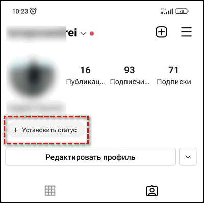
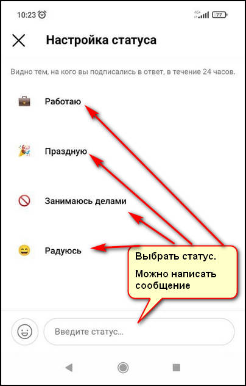
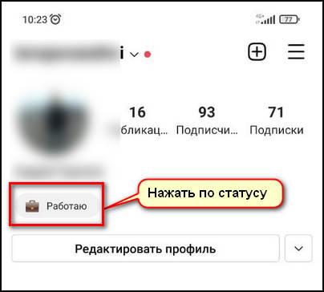
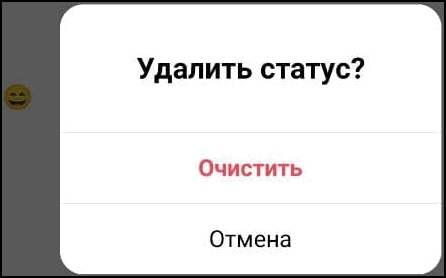

Как установить статус в Инстаграме смайликом

Поставить статус в Инстаграме* смайликом стало возможным после одного из обновлений. Под аватаркой пользователя появилось: «Изменить статус». Нажав на плашку, появится список эмодзи, которые можно использовать.
Новая функция «Статусы в Инстаграме*»
Функция со статусами доступна не всем пользователям, а многие до сих пор не получили обновлений. Поэтому, если раздел еще не появился под аватаркой – нужно подождать следующего обновления для вашей страны.
Опция была взята из приложения Threads, где можно установить статус для друзей и знакомых. Он становится доступен при переходе в профиль. Как установить статус в Инстаграме*:
- Зайти в свой профиль – нажать под аватаркой: «Установить статус».

- Выбрать смайлик – указать ниже текст длиной не более в 16 символов.

- Добавить на страницу.
Если владелец страницы опубликует Историю, то рядом с его аватаркой возникнет значок. Среди смайлов есть уже готовые варианты:
- счастье;
- скука;
- работаю;
- радуюсь;
- отмечаю;
- занят.
Появится небольшой текстовое пояснение и сам смайлик. После установки, он будет доступен в течение шести часов, и по прошествии – его стоит поменять на другой.
В 2022 году обещают отключение Threads. Вместо этого пользователи будут перенаправлены в Instagram*. Причиной считают ребрендинг Facebook* и исключение из него списка продуктов, куда и вошел мессенджер.
Убрать статус в Инстаграме*
Чтобы скрыть установленный статус, пользователю нужно вернуться к своему профилю и повторно нажать по установленному тексту. Как убрать:
- Нажать по текстовому уведомлению – удалить введенный текст.

- Сохранить изменения.

Теперь владелец профиля сможет установить новый или вовсе оставить профиль без изменений. На страницах друзей можно посмотреть, какие статусы они установили. Встречается техническая ошибка, когда доступен смайлик в своем профиле, но его невозможно увидеть в чужом. Такую проблему можно решить через повторное обновление приложения.
Текстовые статусы в Инстаграме*
Помимо того, что владелец страницы может установить эмоджи, ему доступны текстовые статусы. Их можно ввести длиной не более чем в 16 символов, включая пробелы.
Убрав смайлик в биографии, можно вписать текстовое уведомление, которое увидят посетители страницы:
- Нажать по установленному тексту.
- Появится список эмоджи – снизу: «Введите текст».
- Указать нужный статус – Сохранить.
Как и эмоджи, посетители страницы смогут посмотреть сообщение. Как и в других категориях, где доступен ввод текста, запрещены нецензурные выражения (на русском и английском), оскорбления других пользователей.
Технические проблемы со статусом: символы вместо эмодзи
Техническая ошибка, когда вместо смайлов появляются стандартные символы или юникод, присуща устройствам на базе Android. Она возникает перед обновлениями или если владелец страницы не установил новую версию Instagram*. Если ошибка не была решена через установку новой версии, то можно попробовать такой способ решения:
- Зайти в редактирование текстового уведомления – удалить текущий.
- Нажать рядом с полем для ввода по значку смайла – выбрать из списка подходящий.
- Установить и сохранить.
Далее, нужно перезапустить приложение и проверить, как будет отображаться информация в биографии. Возможно, вместо изображения эмодзи тоже появятся стандартные символы. В таком случае, нужно удалить Инстаграм* и установить его заново.